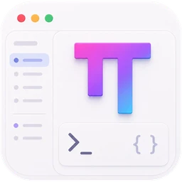

一句话交代任务
发送之后，新对话直接接着流式输出，项目和分支已经带上。

OMP StudioCoding Agent 越来越能干
工作流却还散落在十几个窗口里
发送之后，新对话直接接着流式输出，项目和分支已经带上。
思考、工具调用和命令输出实时流进对话，不用再去翻终端。
编辑卡片里直接是红绿 diff，改的是哪几行一眼清楚。
步骤清单随执行更新，typecheck 重跑通过后才算收尾。
本轮改动汇总成一张卡片，逐个文件审核、标注。
思考、工具调用、diff 和验证，实时流进同一条对话。
Studio 不去读屏幕上的字。每个动作都是类型化的命令，每个状态都有 Runtime 给的真值。
RendererReact 工作台StudioClient语义 query 与 commandDesktop IPC只解析信封Host facade校验并分发BridgeRuntime 的类型化连接omp --mode studio-host钉住版本的 Runtimegit clone --recurse-submodules https://github.com/the-snowpear/omp-studio.git
cd omp-studio
npm install
npm run omp:overlay:apply
npm run preview需要 Node.js 22+。模型与登录沿用 OMP 的 models.yml 和 omp login，仓库不内置任何供应商密钥。